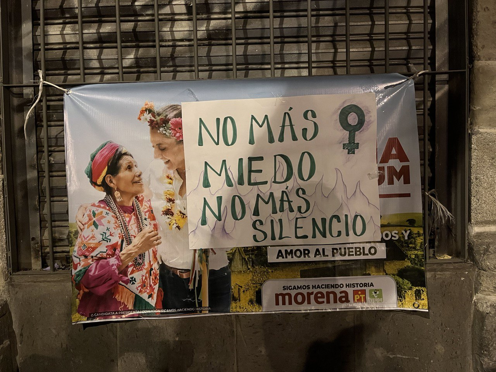
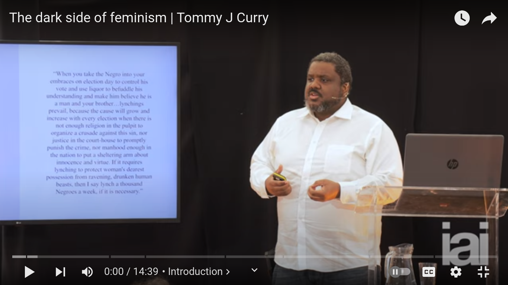
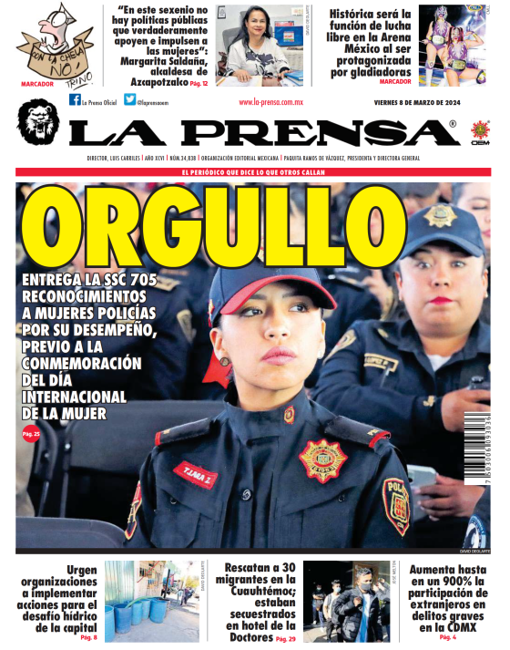

12 March 2024
The feminist movement in Mexico is strong, but we must be vigilant of liberals' attempts to limit its radical potential.

(Mexico City 2024. A feminist sign stuck over Morena election propaganda, declares "no more fear, no more silence")
Last Friday was International Women's Day, known as 8M in Mexico, which was marked around the world with large demonstrations in favour of gender parity. It is a movement that is not just critical in advancing women's rights, but has the potential to be a broad-based movement nationally and globally. This is important in an era of greater political polarisation, where fragmented and isolated movements have little impact on government policy.
This is especially true in Mexico, where protests do occur on a daily basis, but have little impact. It was not always like this. In decades past movements such as the Zapatistas in the 1990s, or the radical protest groups of Oaxaca in 2006 resisted state violence and engendered change.
Today the feminists are the one group that bucks the trend, resisting the violence of the state, pressurising the political elites to reverse patriarchy.
The nominally "left/centre" current government of Morena has responded in two ways. First the president, AMLO, has distanced himself from a movement he paints as a right-wing plot. Second, the party, though, has absorbed the narrative, and pivoted to present itself as a force for change.
Indeed, the increased visibility of women's issues in the public sphere, due to feminist protests, has pushed all the main parties political parties to propose pro-female polices.
For Mexico it is a start, but we must remain weary of liberals from hi-jacking the movement. Namely, because liberal feminism, like liberalism itself, is one that is inherently tied to the development of a capitalism and free markets.
Capitalism by itself is just a way of organising an economy, so it is not inherently a social bad. Yet, we have ended up with a system where corporations and the elites that run them are out of control. The result is irreversible impact on the earth's climate and rampant poverty and inequality globally.
We ended up in this situation due to what the Anglo-Saxon political and economic elites in the US did over the last few centuries to ensure their privileged positions after African American emancipation. Namely, they constructed a liberalism by reference to white supremacy, patriarchy and racism that limited who could access markets. In the process, denying the dangerous classes the opportunity to accumulate the economic resources necessary to construct a truly egalitarian society. And as the US empire has expanded globally over the last century, this same form of liberalism has accompanied it; guiding how nations are integrated into the global order. Not surprisingly then, as academic Tommy Curry shows, contemporary liberal feminism is still grounded in these ideas.
e
(link to vid: https://www.youtube.com/watch?v=VUFn1b-GuG8)
What this thought provoking research demonstrates, is that not all feminisms are the same. A critical point for radical groups to understand when negotiating for structural changes. One that also understands, that while the aim of liberal feminism is to expand female participation in society, it is only to those that sustain the liberal order. A limited progressivism that increasingly favours the elites, to the detriment of the rest.
Therefore, we should understand liberal feminism's goal as limiting women to the replication of those roles undertaken by males to reproduce capital. Through my own research, I have come across various examples of how it works in Mexico.
In the first example, GMB, a Mexican fintech service, uses a liberal feminism to justify its targeting of women. One of the company's adverts, masquerading as journalism, from 2022 states that it is providing women with the tools to become financially independent. Of course there is no mention of the fact that the poorest women in Mexico, at least 30mn (INEGI 2021), have little financial literacy or the means to access such a service. A feature of the economy open only to those that have the same access to resources as their male counterparts, who dominate the world of finance.

Here is another example from the front page of the right-wing, but very-pro liberal, Mexican tabloid "la Prensa" on the morning of 8M.

In a country where police brutality and impunity reign, where most femicides go unpunished; the liberal right cynically positions the feminist with "pride" (orgullo) as an agent of state violence. Much as the liberal media venerates the male majority security services. And as the police has always served the interests of capital first, woman are also permitted this new role.
In all, the forces of liberalism are strong in Mexico, but they are not omnipotent. Thus, in a time when Mexico will be led by its first female president by the end of the year, we must support the radical feminist movements we saw on the streets last Thursday. It is the one movement in Mexico that can pressure the political elites to do more. To force them to go beyond simply allowing women to act like their male counterparts in reproducing the status quo of inequality. In doing so, the country can begin to reverse not just the condition of women, but also the poverty that the majority of Mexicans, male and female, suffer on a daily basis.